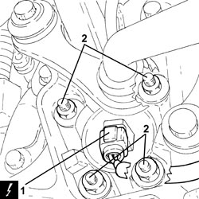
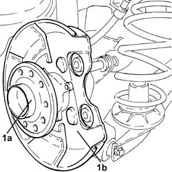
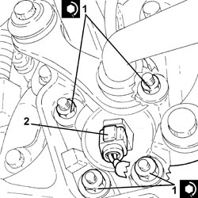

4450D10 HUB FOR ONE REAR WHEEL, L/H OR R/H - R+R WITH WHEEL REMOVED - CHECK WHEEL GEOMETRY SEPARATELY
- Path
- Procedures > 44 SUSPENSION AND WHEELS > 4450 HUBS AND WHEELS > 4450D REAR WHEEL HUBS > 4450D10 HUB FOR ONE REAR WHEEL, L/H OR R/H - R+R WITH WHEEL REMOVED - CHECK WHEEL GEOMETRY SEPARATELY
- Kind
- repair procedure (removal / refitting; the operation number is the code)
- Applies to
- all engines; all production periods
- Interactive page
- https://sloeber94.github.io/elrnDB-fCrm/en/#/194000570
Applies to: all engines; all production periods
 Removing
Removing
 Refitting
Refitting- Position the vehicle on a lift.
Op. 7055B44 LEFT REAR WHEEL ARCH LINER - R.R
Op. 3310B57 REAR BRAKE CALIPER BRACKET (ONE), LEFT OR RIGHT - R.R.
Op. 3310B48 REAR BRAKE DISC (ONE), LEFT OR RIGHT - R.R.
1. Disconnect the electrical connection from the left rear wheel rpm sensor.
Description | Connector | |
|---|---|---|
1 | Left rear wheel sensor for ABS |
2. Undo the rear wheel hub retaining nuts.

Applies to: all engines; all production periods
1. Remove the rear wheel hub (1a) and the brake disc shield (1b).

Applies to: all engines; all production periods
Refitting
Removing- Place the brake disc shield and the rear wheel hub back in their housings.
1. Tighten the new nuts fixing the rear wheel hub to the recommended torque.
Component | Fastening | dia | Value (daNm) | Validity |
|---|---|---|---|---|
Rear wheel hub | Nut (to replace) | M10 | (steering knuckle side) 5.0 - 6.1 + 75° |
2. Connect the electrical connection to the left rear wheel rpm sensor.

Applies to: all engines; all production periods
Op. 3310B48 REAR BRAKE DISC (ONE), LEFT OR RIGHT - R.R.
Op. 3310B57 REAR BRAKE CALIPER BRACKET (ONE), LEFT OR RIGHT - R.R.
Op. 7055B44 LEFT REAR WHEEL ARCH LINER - R.R
- Remove the vehicle from the lift.
Topics linked from this page (4)
- 3310B48 REAR BRAKE DISC (ONE), LEFT OR RIGHT - R.R.
- 3310B57 REAR BRAKE CALIPER BRACKET (ONE), LEFT OR RIGHT - R.R.
- 7055B44 LEFT REAR WHEEL ARCH LINER - R.R
- K075 LEFT REAR WHEEL SENSOR FOR ABS